1편에 이은 내용이다.
1편 :
https://gall.dcinside.com/mgallery/board/view/?id=gov&no=1112808&page=1
1. 니케의 기본적인 전투 시스템.....(1편)
2. 두 가지 오토 버튼의 기능............(1편)
3. 엄폐 (전체/개인)................................(1편)
4. 버스트 수급과 톡톡이.....................(이후 2편)
5. 전투력 보정
6. 우월코드
7. 코어 데미지
8. 명중률과 거리별 데미지 and 관통
9. 파츠/저지부위
10. 머신건 예열
4. 버스트 수급과 톡톡이
1) 톡톡이

- 스나와 런처는 클릭시 발사되는 것이 아니라 차지를 한다. 꾹 누르게 되면 조준점 옆 게이지가 차면서 딜이 증가한다.
- 자동 조준 기능을 켰을 경우 시스템은 무조건 풀차지를 한 이후 공격한다. 이는 자신이 조작하는 니케 외 무지성 사격하는 4명에게도 해당된다.
- 하지만 아래와 같은 이유로 일부니케를 제외하고 (흑련, 노이즈 등) 풀차지로 공격하는 경우는 거의 없다.
첫째, 풀차지의 버스트 수급량과, 차지를 하지 않고 윗 짤 처럼 툭- 툭- 끊어서 쳤을때의 수급량이 동일하다.
둘째, 끊어 칠 경우 일부니케를 효과적으로 활용할 수 있다.(ex. 티아는 5회 명중시 도발이 켜진다. 빠르게 도발을 켜기 위해 차지하지 않은 공격을 한다./앨리스는 사격간 딜레이를 최소화 하여폭딜을 끌어낼 수 있다.)
- 이러한 이유로 런처와 스나는 끊어 치는 것이 보통이고, 이걸 톡톡이라고 부름.
2) 버스트 게이지 수급과 톡톡이
- 위 첫번째 이유를 좀 더 자세히 살펴보자면
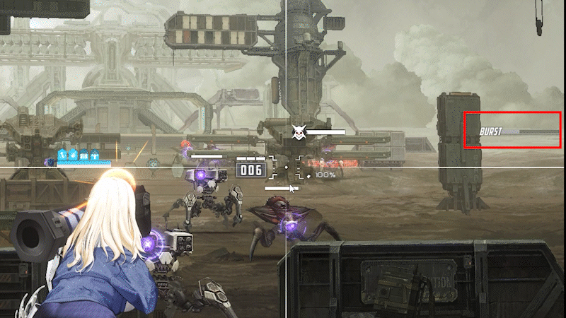
- 이게 끊어 쳤을때 버스트 수급량이고
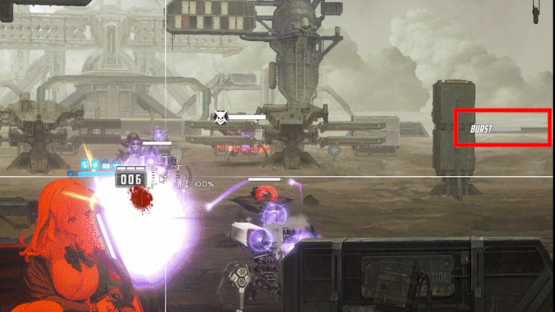
- 이게 풀차지 했을 때 버스트 수급량.
- 자세히 보면 노차지랑 풀차지랑 탄환 1개당 버스트 수급량은 차이가 없음. 때문에 끊어쳐서 버스트 게이지를 빠르게 채우는게 이득이다.
5. 전투력 보정
- 니케 각 스테이지에는 기준 전투력이 존재하고 그 아래 자신의 전투력을 보여준다.
- 기준 전투력은 단순히 스테이지의 난이도를 나타내는 용도가 아닌, 자신의 전투력과 비교하여 스탯에 보정을 달아준다.
- 쉽게 말해서, 자신의 전투력이 기준 전투력에 미치지 못했을 경우 (붉게 나타날 경우) 자신의 스텟이 일정 % 하락한다.
- 스테이지 안밀릴때 할배들이 자고 와라는 것은, 전초기지 보상으로 니케들 레벨을 올려 니케 자체의 스펙을 강화하라는 의미도 있지만 기준 전투력과 자신의 전투력간 차이를 줄여 보정으로 인해 감소되는 스텟을 줄이라는 의미이다.
- 구체적인 보정 수치는 나도 모름. 아래 몇가지 상황을 보고 그냥 '아 이정도 차이가 나는구나' 감만 잡으셈.
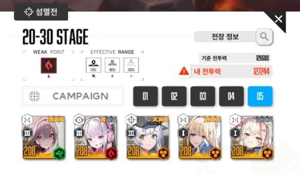
기준 전투력에 비해 자신의 전투력이 이정도 모자랄때
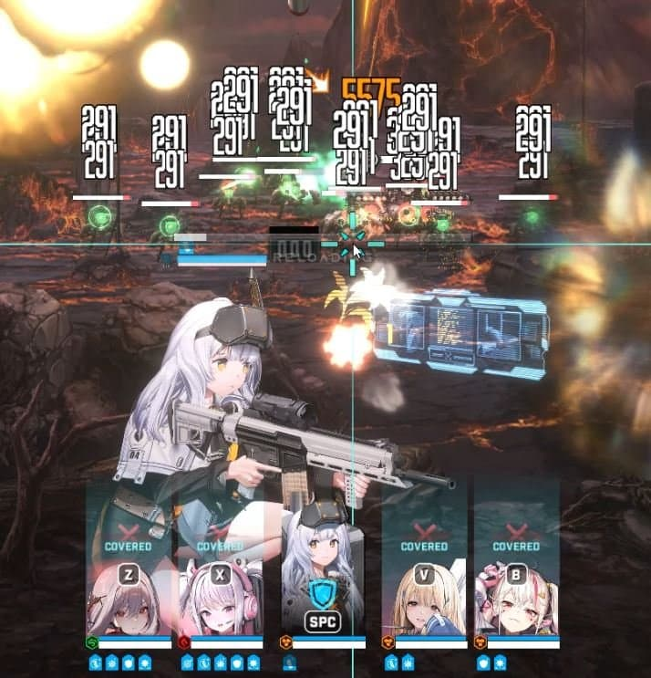
농설 딜이 이정도 나옴
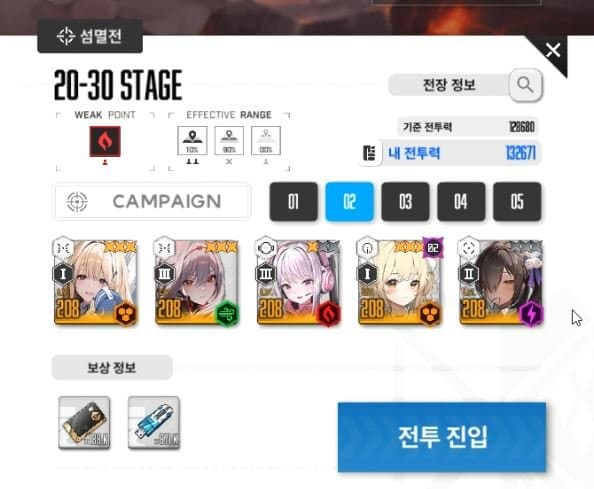
기준 전투력보다 자신의 전투력이 높을 때
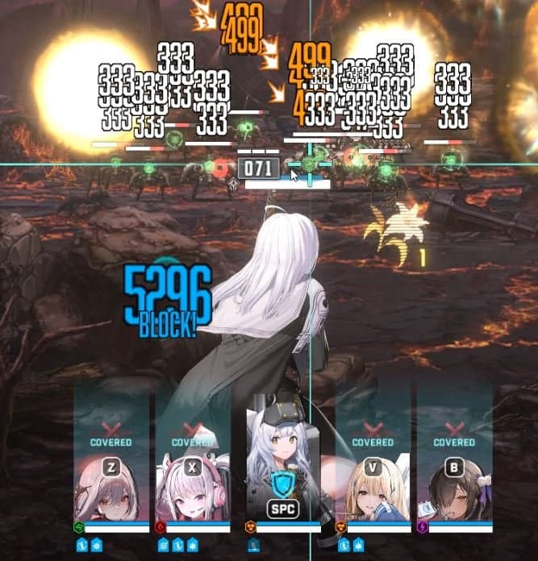
농설딜이 이정도 나옴
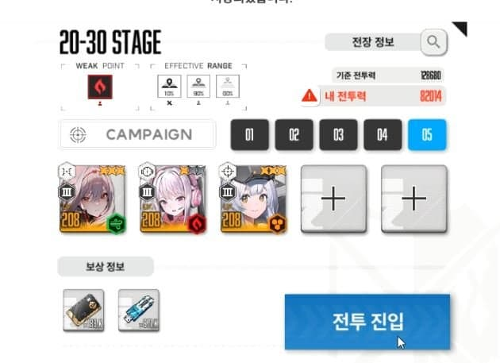
기준 전투력에 비해 자신의 전투력이존나 모자랄때
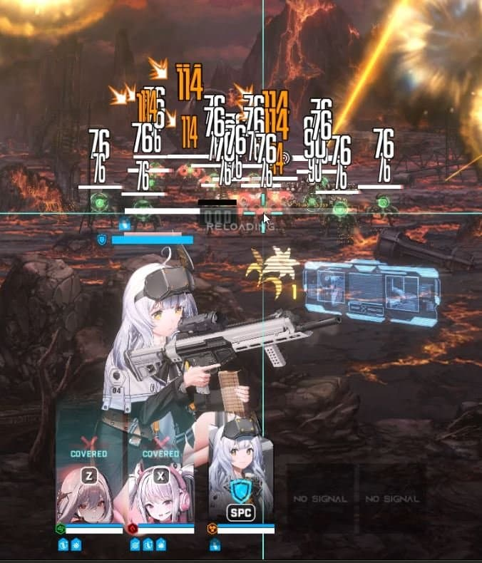
이정도임
6. 우월코드
- 포켓몬 물 풀 불 상성 딱 그거임.
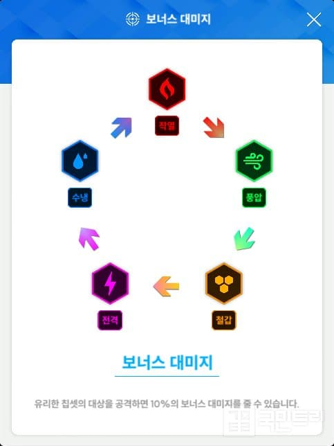
- 유리한 상성으로 공격시 10% 딜증가 라고함.
- 뉴비땐 이런거 신경 쓰지 말고 그냥 짱짱 쎈 얘들 고정 편성하면 된다.
- 참고로 각 랩처의 코드는 전투 전 적 정보를 통해 확인이 가능하지만, 전투 중 보이는 몹이나 공격의 색상으로 판단 가능함.
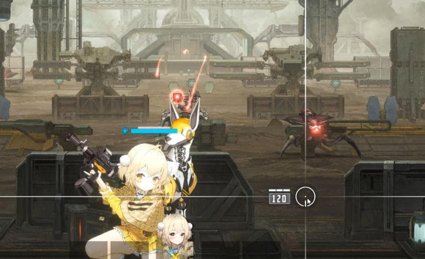
얘는 붉어서 작열 코드고
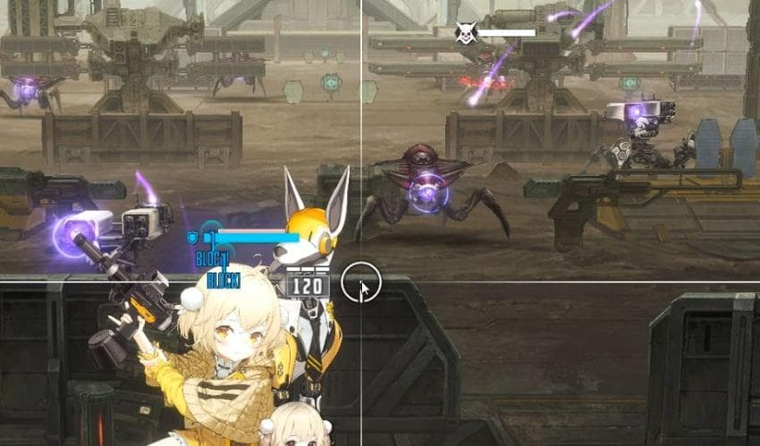
얘는 전격 코드고
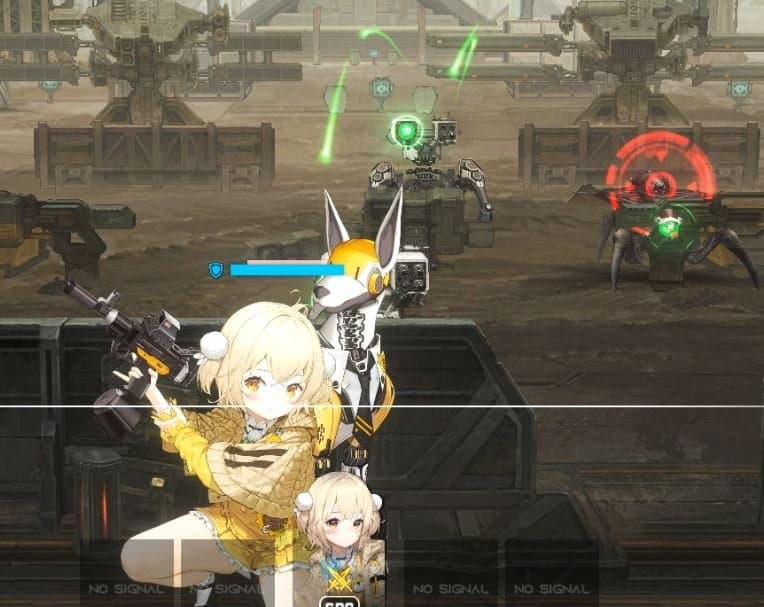
얘는 풍압 코드임
7. 코어 데미지
- 쉽게 생각해서 적 약점 부위(코어)를 사격하여 더 많은 딜을 넣는 것.
- 위 우월코드 사진 보면 색깔별로 밝게 빛나는 부분이나 딱봐도 존나 약점일것 같은 부분이 있음. 그부분이 코어임.
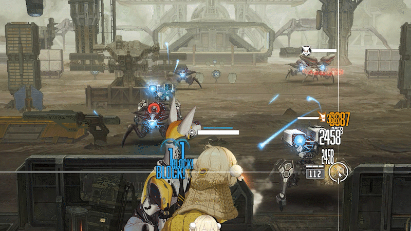
- 코어 이외의 부분 타격시 사격 마커도 흰색이며 데미지도 흰색임.
- 코어 부분을 사격하면 마커가 붉게 되며, 데미지도 붉게 뜸.
- 모든 적이 코어를 보유한 것은 아니며, 있더라도 쉽게 볼 수 없는 위치에 있는 적도 있음.
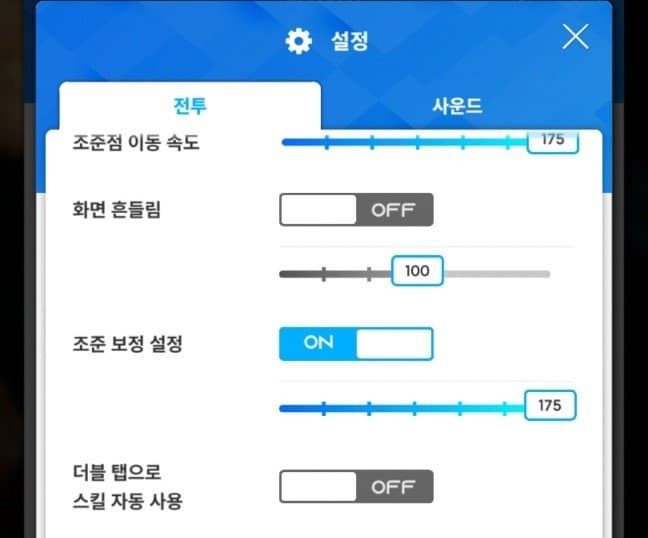
- 설정에서 조준 보정을 켜주면 적 니케의 코어 부분에 에임이 자석처럼 착 붙어서 코어 타격하기 쉽다.
- 참고로 아래 짤에서 니케에서 볼 수 있는 모든 데미지 종류를 파악 가능.
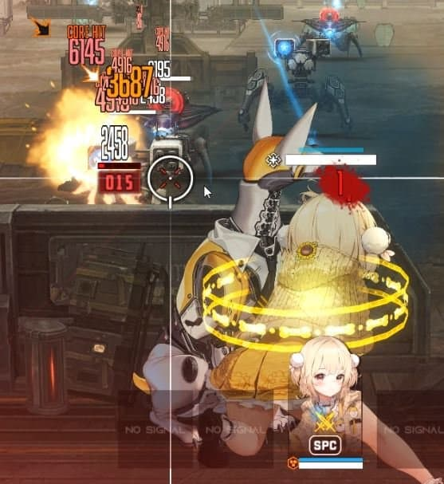
- 흰색이 일반 데미지
- 노란색이 치명타 데미지 (옆에 화살표 마크 존재)
- 빨간색이 코어 데미지 (코어 히트라고 뜸)
- 그보다 더 진한 빨간색이 코어 + 치명타 데미지 (코어 히트와 동시에 옆에 화살표 마크 존재)
8. 명중률과 거리별 데미지, 그리고관통
1) 거리별 데미지
- 니케에는 거리별 데미지가 존재함.
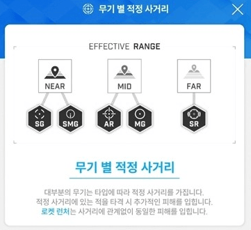
- 각 스테이지 랩처 분배를 자세히 보면 전방, 중앙, 후방 등 다양하게 위치해있음.
- 각 무기별로 적정 거리의 적 사격시 보너스 데미지 있는데, 어차피 실전에선보이는 족족 사격해서 뉴비가 신경쓸 건 아님.
2) 명중률
- 너 배그할때 AR로 가까이 있는 적 연사하면 다 맞지만 멀리있는 적 연사하면 존나 안맞잖아? 그런 시스템이 니케에도 적용된거라고 보면 됨.
- 위 짤에 등장한 니케는 리타로, SMG 사용 니케임. 거리별 데미지 표 보면 알겠지만 SMG는 근거리 최적화 무기임.
- 윗 글 코어 데미지 부분에서 리타가 근접한 적 코어를 노리고 사격했을 땐 코어데미지(빨간 데미지)가 많이 떴음.
- 그러나 지금 짤에서 처럼 조준 보정을 최대로 키웠음에도 후방에 위치한 적의 코어는 거의 타격하지 못함.
- 만약 리타의 명중률을 높인다면, 저렇게 멀리있는 적의 코어도 맞힐 확률이 높아짐.
- 쉽게 생각하자면 명중률 = 집탄률이라고 보면 될듯?
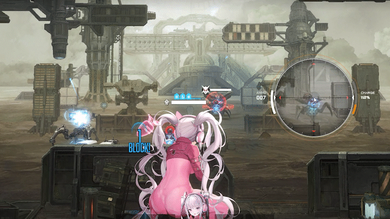
- 리타의 경우와 반대로 적정 사거리가 후방인 스나의 경우 뒤에 위치한 적의 코어를 타격하는게 용이함.
3) 관통
- 아군과 마찬가지로 랩쳐쪽도 여러 지형 지물을 엄폐물로 사용할 때가 있음. 또는 다수의 랩쳐가 한군데 뭉쳐있는 경우가 있음.
- 일반적으로 총에서 발사되는 탄환 1개는 1개의 랩처/ 구조물만을 타격 가능함.
- 그러나 바로 윗 짤 앨리스 처럼스킬에 관통을 들고있는 경우 저렇게 엄폐물 뒤에 숨은 랩처도 타격 가능함. (1회 사격으로 엄폐물과 랩쳐 둘다 제거.)
- 같은 원리로 한군데 뭉쳐있는 랩쳐의 경우, 관통을 보유한 니케를 기용하면 효율적으로 처리 가능함.
9. 파츠/ 저지부위
- 가끔가다 니케 스킬에
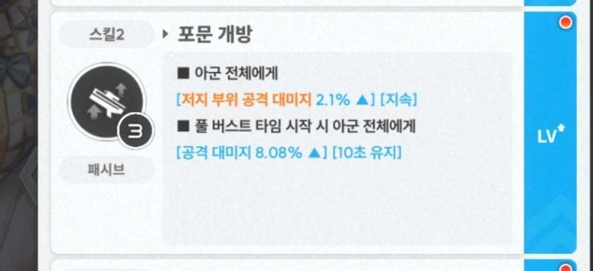
저지 부위 공격 데미지나
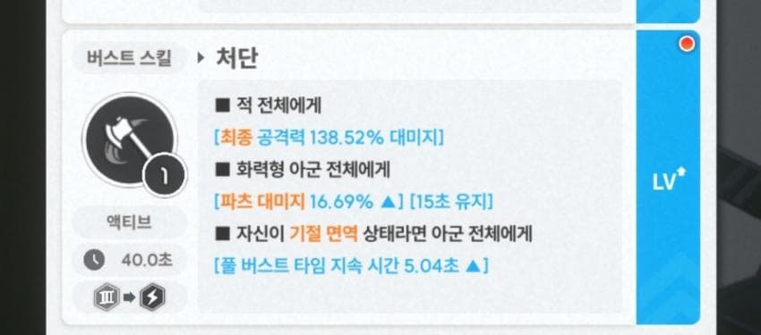
파츠 데미지라고 있는데, 이게 뭐냐면
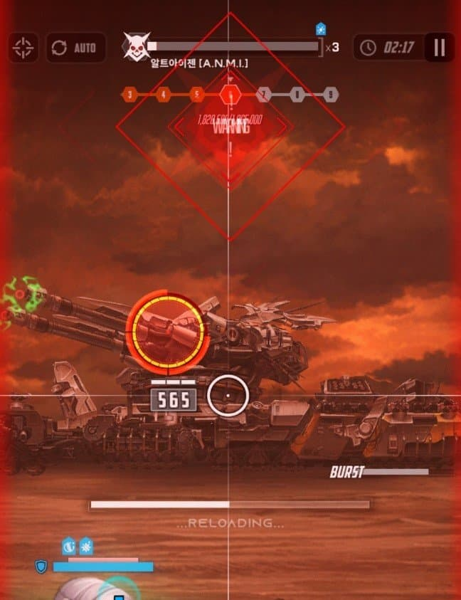
- 이게 저지 부위. 보스들이 특정 기술을 사용하기 전 드러나는 붉은색 원임.시간 내에 파괴하지 못할 시 까다로운 패턴이 나온다.
- 해당 부위나올 때 풀버스트 상태가 아닌 이상, 직접 조종하고 있는 니케로 부숴야 하기 때문에 니케들 장탄관리가 요구됨.
- 저지부위 데미지 증가란 저 부위 파괴할 때 딜 증가 해주겠다는 것.
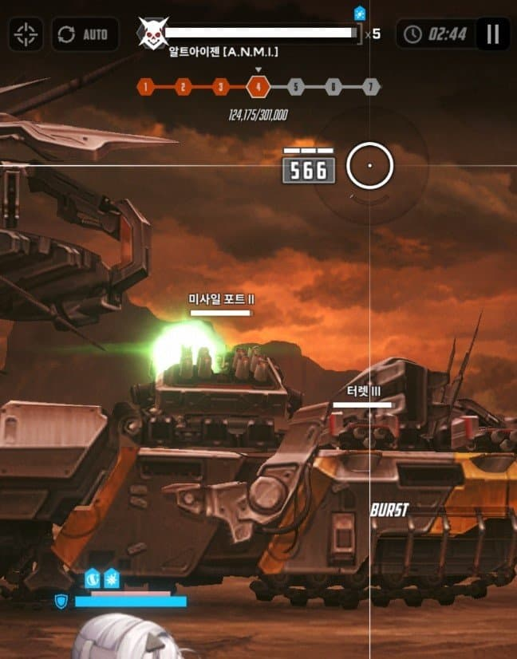
- 이게 파츠(부위). 특정보스 몹 몸에 별도의 이름과 체력바를 가진 부분임.
- 이걸 파괴해서 특정 패턴을 스킵한다거나, 보스에게 많은 데미지를 줄 수 있음.
- 모더니아 등 파츠를 파괴하면 안되는 보스도 존재해서, 보스별 공략 보고 ㄱㄱ
- 파츠 데미지 증가란 해당 부분 파괴할 때 딜 증가 해주겠다는 것.
10. 머신건 예열
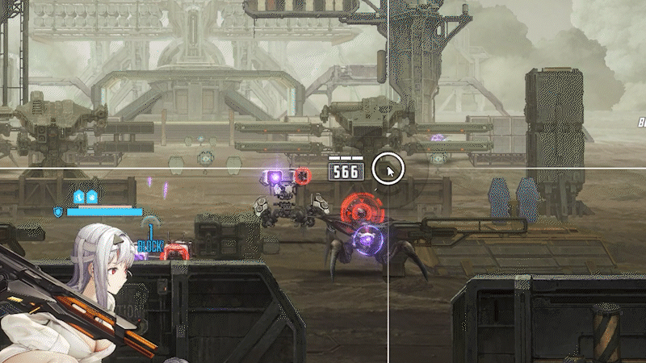
- 머신건 종류는 에임 아래 타원형 게이지가 따로 존재함. 저게 예열 게이지.
- 저게 다 차야 머신건의 제 성능을 발휘함. 저거 다 차기전에는 버러지도 이런 버러지가 없음.
- 머신건 사격 도중 쉬거나, 장탄 소모로 재장전할 때예열 게이지가 점차 줄어 결국 초기화 됨 = 딜로스
- 때문에적당한 예열 관리가 필요.
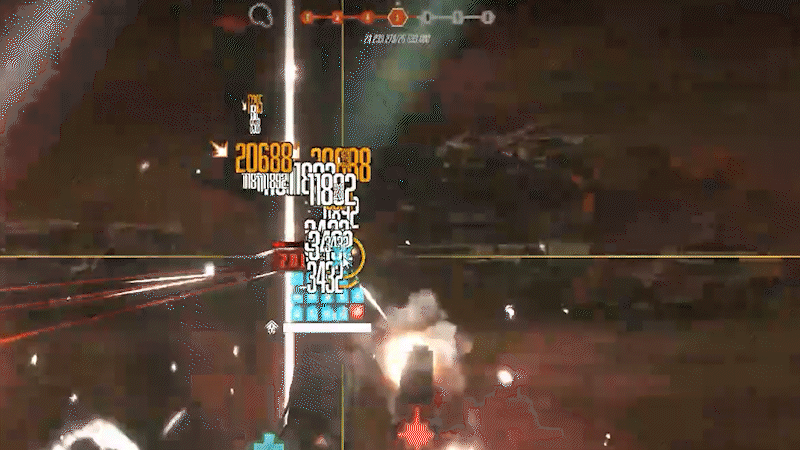
- 예열 관리 실전. 저지 부위를 빠르게 파괴하기 위해 장탄/예열 관리가 필요한 상황. 저지 부위 등장 전에 한발씩 끊어 치면서 예열 게이지가 떨어지지 않도록 유지함.
오류나 보완할 내용 있으면 댓 ㄱㄱ